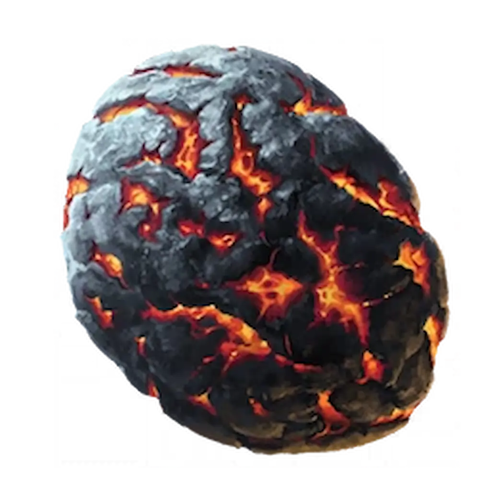
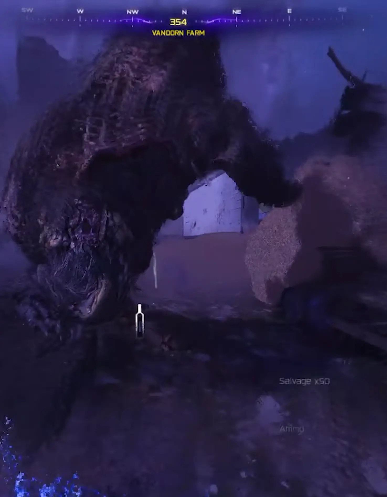
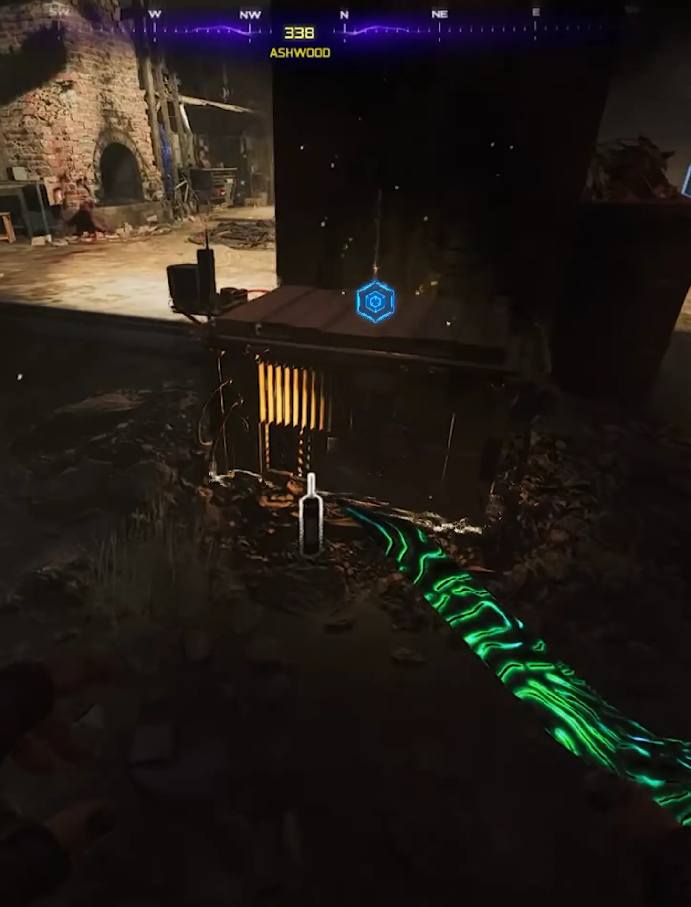
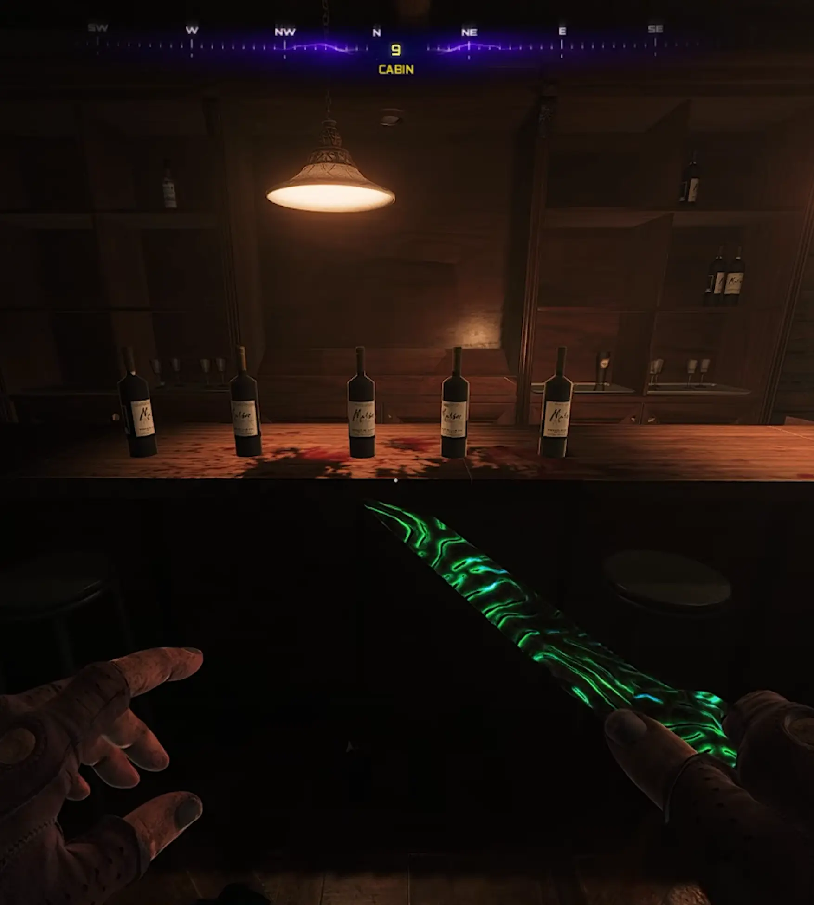

Musisz mieć ukończone główne zadanie Ashes Of The Damned, aby zdobyć ten relikt. Mecz musisz właczyć na Tier 1. Wyzwanie aktywuje się od rundy 40+.

Wasze zadanie zaczyna się dopiero na 40. rundzie. Dopiero wtedy będziecie mogli zdobyć przedmioty potrzebne do aktywacji portalu.
Musicie zebrać dwa specyficzne przedmioty ukryte na mapie:


PRO TIP: Niedźwiedź zaczyna się pojawiać od rundy 16, ale możecie go przywołać, strzelając w trzy ukryte czaszki w Kosmodrom Zarya za pomocą Necrofluid Gauntlet (Rękawica Nekrofluidu – cudowna broń).

Udajcie się do Cosmo Drone, gdzie pojawi się żółty portal.
Co robi ten relikt?